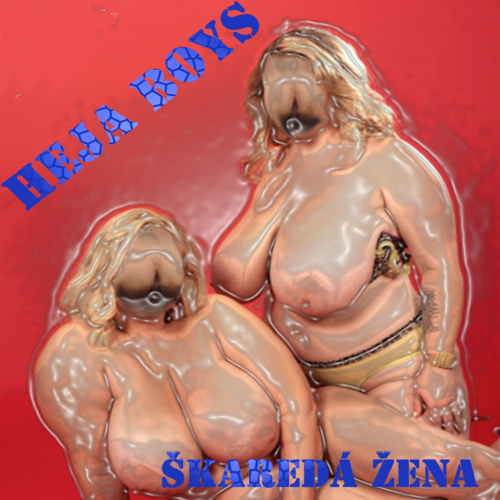

Alba
Poslechněte si naše nahrávky. Každé album je propojeno s merchem (CD) a obsahuje informace o písničkách.
Žehba Inspirationalis

Album dostupné online. Poslechněte si jej na Bandcampu.
Seznam písní
- Tomáš Ledvina
- Procházka Růžovým Sadem
-
Tři Telata
- Text: Text písně – Tři Telata
-
Nebulant
- Text: Text písně – Nebulant
-
Radek Černý
- Text: Text písně – Radek Černý
- Klobukový v A dur
-
Lidovky 2
- Text: Text písně – Lidovky 2
- Francuzskaja koljadka
- Veselá Příhoda v Lese
- Óda na Život
Škaredá žena

První CD, nahrané na noťas dlouho před oficialitami, písně na dlouhé cesty, k dostání na přání.
Seznam skladeb a texty
Kliknutím na název skladby zobrazíte / skryjete text.
Intro
Instrumentální intro.
Autobus
1) Jede autobus po silnici, srazil ptáka na ulici. Jede autobus do serpentin, před ním na cestě je rozlitý terpentýn.
2) Jede autobus do Himalájí, řidič se při cestě cítí jako v ráji. Hostesky ho ukájejí, svými pysky na něj mávají.
3) Jede autobus přes koleje, venku jako z konve leje. Jede autobus kolem koní, hostesky řidiči honí.
R) Onanie! 5x
4) Narazil autobus do svodidel, řidiči prolétla sklem jeho nahá prdel.
5) Letí řidič kolem stromů a my všichni dokola smějeme se tomu. Letí řidič přímo na most a říká si… KURVA!!
R) Onanie! 4x Všechny nás zabije!
Laň
1) Stojí mladý doubek kdesi v luhu, z nebe padá líně bílá hmota. Tahle nálada mi nejde moc k duhu, bídná zimní, depresivní, schizofrenní psota.
2) Lesní zvěř už svoje soli pilně mlsá, od srdnatých myslivců darována. Moje srdce z toho vždycky zaplesá, když se v přítmí noci zaleskne břitká hrana.
3) Těžký hasák láme kosti jaká je to krása, svraštělý mozek se po stole kutálí. Koulej se, koulej, tohle není bourač masa, nýbrž pytlák kterýžto se šavlí ohání.
4) Mladá laňka na paloučku osamělá, „ach! Jak já tě dostanu? Takováhle kráska! Jen po tobě se má postava bledá!“ Jak se krásně vyvíjí zoofilní láska.
5) Jedné lednové noci se myslivec plíží, na mysl mu vytanuly čtyři mladé laně. K proklatému dubu se ve chvilce blíží, zrovna když krček laňky podklouzl na břitké hraně.
6) On zlostí svojí pušku tasí, oči krvavé na pytláka hledí. Příčinu zármutku svého v jednom mžiku smete, pak si spršku broků do vlastního ksichtu vmete.
7) To je konec lásky kruté pánové a dámy. Sníh pokrývá pláně pusté, do pekel se otvírají hříšníkům brány.
Škaredá žena
1) Já mám škaredou ženu a pět tlustých dětí, čtyři jsou již březí a pátý žere smetí.
R) Heja heja…
2) Mně tak chybí felace, stíhá mě retardace! Jó pět dětí v domě, to zkrátka není nic pro mě!
R) Heja heja…
3) Já měl škaredou ženu a pět tlustých dětí, čtyři tlejí v zemi a z pátýho je smetí.
R) Heja heja…
4) Já byl stižen zákonem, nyní sperma protéká mým otvorem. Jó ve věznici já mám felace dost a spoluvězni hodní hoši říkaj mi tam kost!
R) Heja heja…
AmFCG
R) Amol, eF, Cé, Gé 4x
1) Kuba sólo
R) Amol, eF, Cé, Gé 4x
2) Vítek sólo
R) Amol, eF, Cé, Gé 4x
3) A Bé Cé Čé Dé Ďé E eF Gé Há Chá I Jé Ká eL eM eN O Pé Qé eR eŘ eS eŠ Té Ťé U Vé dvojité W... iX Ypsilon Zet Žet! 2x
R) Amol, eF, Cé, Gé 4x
4) Ej Bí Sí Dý Í Ef Dží Ejž Aj Džej Kej El Em En Ou Pí Kjů Ár Es Tý Jů Ví Dabl Jů Ex Áj Zet 4x
R) Amol, eF, Cé, Gé 4x
5) Toaleta, toaleta, WC, WC! 8x
R) Amol, eF, Cé, Gé 4x
Čokoláda
1) Máš-li malý úd tak nezoufej, najdi úl, strč ho tam a zabouchej.
2) Vem si příklad z brouka chrousta, ve dne spí a v noci šoustá.
3) Čokoláda, čokoláda, každá holka má to ráda.
4) Zezadu i zepředu, hlavně penis bez vředu.
5) Análního sexu není nikdy dost, proto šukám do prdele jen tak pro radost.
6) Komu anální sex nevoní, ten ať si ho vyhoní.
7) Chceš-li mít sex s opicí, potři penis hořčicí.
8) Chceš-li soulož ohnivou, potři péro kopřivou.
Cigáni (Hustej Wimpy cover)
Intro) A teď Vám zazpíváme písničku, z Ruského historického velkofilmu, cigáni jdó do sběrdy…
1) Móje stará blbá je jak pilina... „jaj daj železo na dvojkolák jedem do sběrdy!“
R) Dáj, da dabadaj dababadaj... daj daj daj daj daj daj daj!
2) Vozejky, vozejky, aby bylo na cigára na Klejky... HEJ!
R) Dáj, da dabadaj dababadaj... p*** more HOP HOP HOP
3) Hliník, litina, olovo a měď, každej cigán zná ty kovy nazpaměť... ať se nikde zbytečně nic neválí.
R) Dáj, da dabadaj dababadaj... daj daj daj daj daj daj daj!
1) Móje stará blbá je jak pilina...
R) Dáj, da dabadaj dababadaj... 2x
Impro
Improvizovaná skladba.
Lidovky
1) Prší, prší, jen se leje... „ty vole, neposral ses?“
2) Polámal se mraveneček... Kdybych já měl děvčicu, co by mi ho kouřila!
3) Vyletěla holubička ze skály... A vy milí posluchači naserem vám na hlavy!
R)
4) Běží liška k Táboru... olizuje si svůj zvrásněný lalůček!
5) Kdyby byla Morava, jako je Vídeň... Cibuláři jedou, cibulenku vezou, cibulenka sladká, vošukáme Radka!
R)
Ovečky
1. Ovečka, 2. Ovečka, 3. Ovečka…